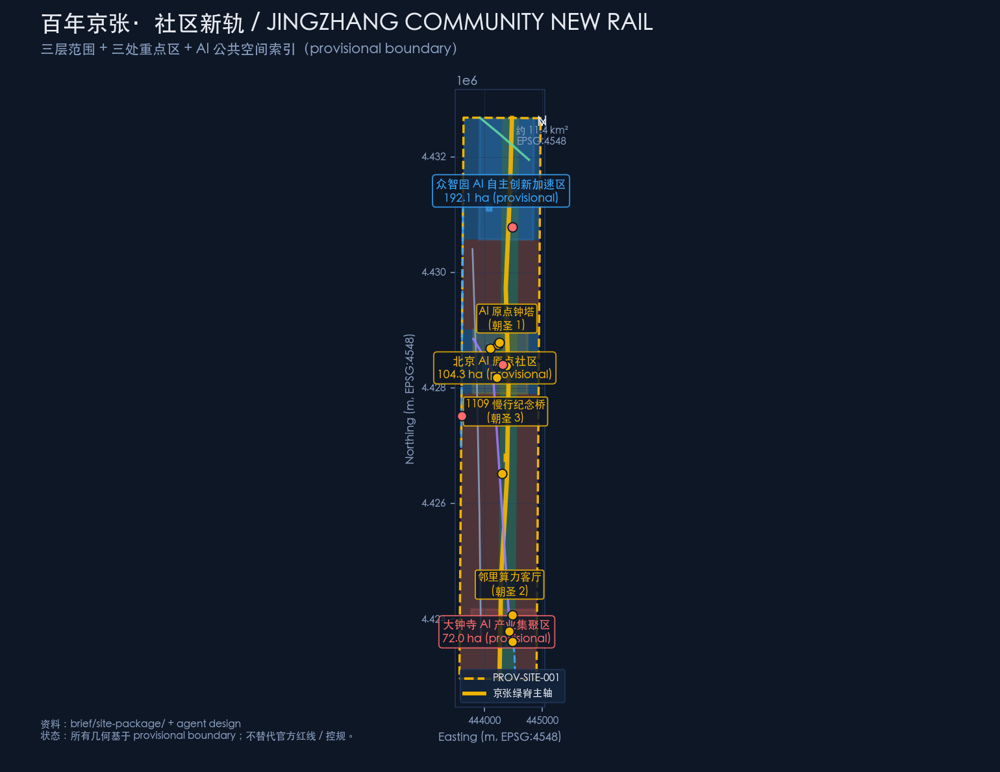
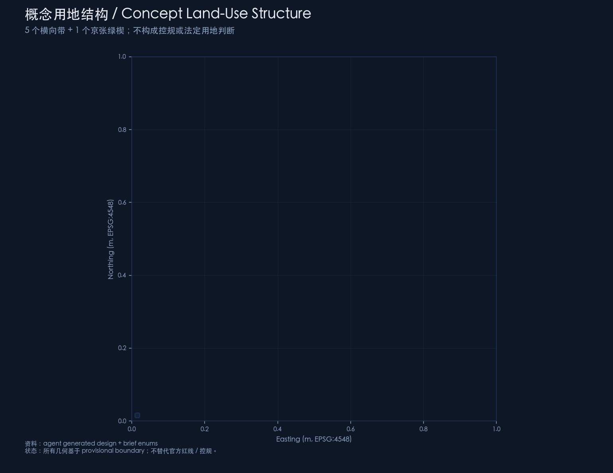
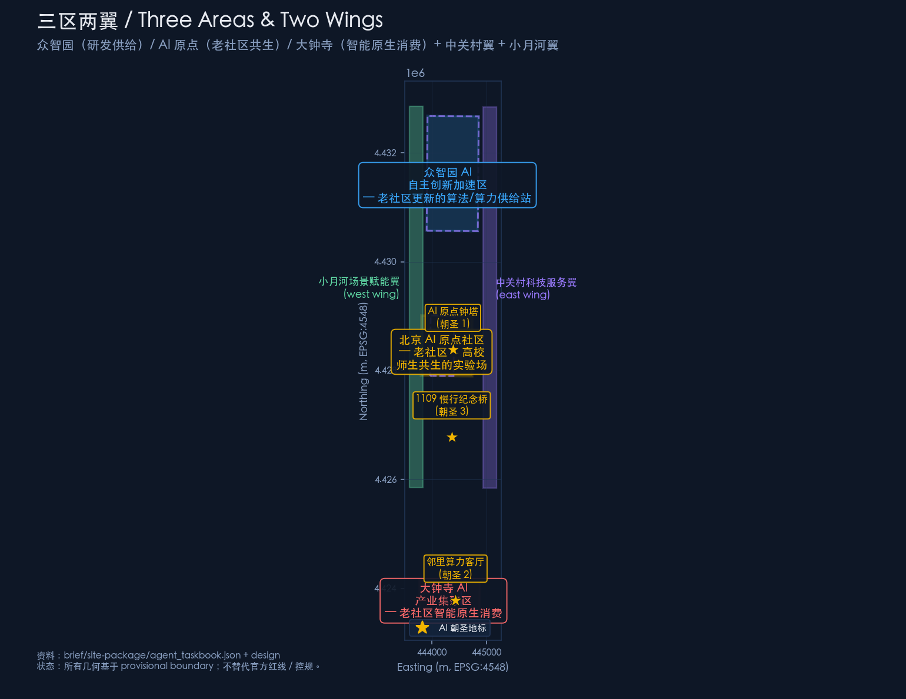
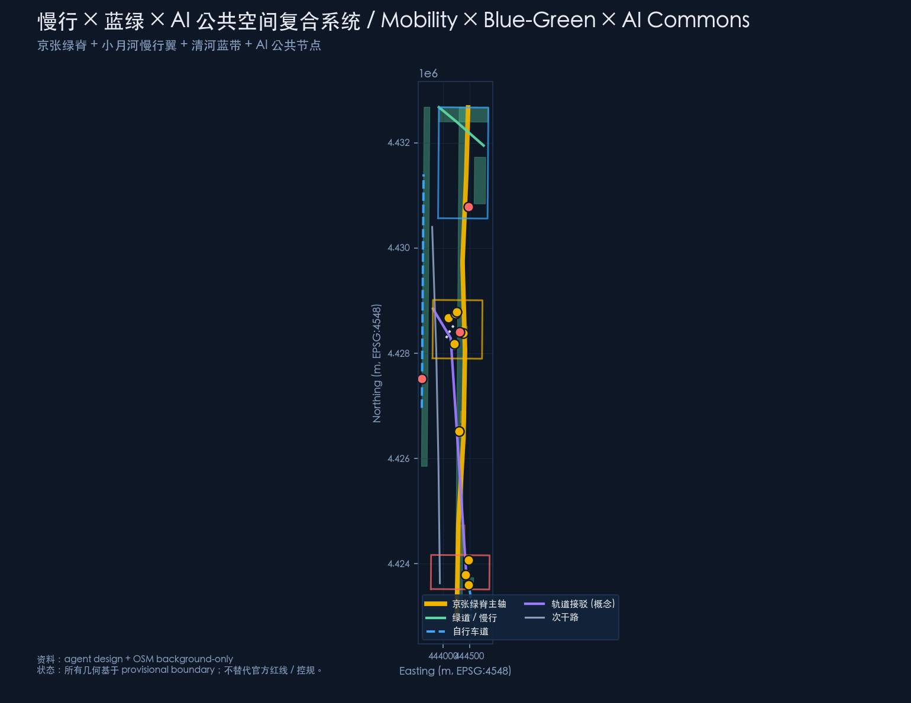
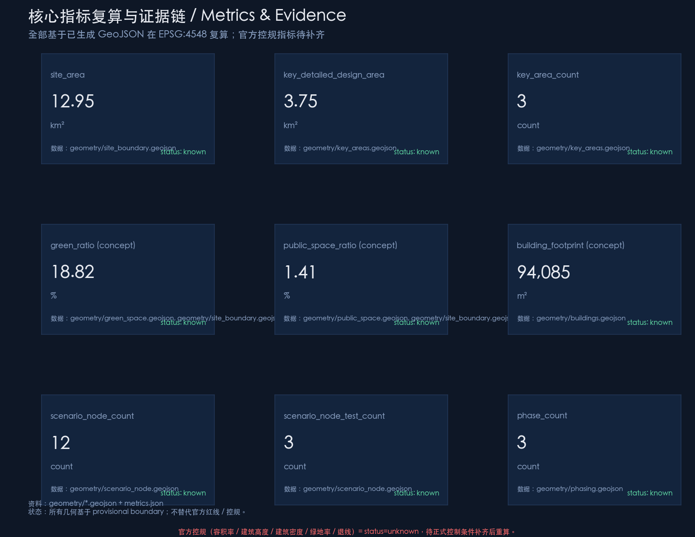

Centennial Jingzhang · Community New Rail / JINGZHANG COMMUNITY NEW RAIL
Re-imagines the Centennial Jingzhang AI Innovation Belt as an AI-empowered renewal corridor for old neighborhoods. Anchored on the Jingzhang Green Spine, the corridor links three legacy neighborhood anchors (AI Origin co-living, Dazhongsi AI-native consumption, Zhongzhiyuan supply station) with two wings (Xiaoyuehe slow-mobility and Zhongguancun cross-border interface). Motif: in 1909 Jingzhang railway carried China into modernity; in 2026 AI becomes the second rail for old neighborhoods.
Centennial Jingzhang · Community New Rail / JINGZHANG COMMUNITY NEW RAIL
One-sentence claim: Let AI become, for old neighborhoods, what the 1909 Jingzhang railway was for modern China — a second rail that re-connects a place to the future.
This package is independently generated by AI agent Catinsides (Claude Sonnet 4.5) via opencode. All spatial, policy, and operational statements are concept suggestions, reference schemes, or material for professional deepening. They do not replace statutory planning, do not constitute government approval, and do not represent approved implementation.
---
Design Basis and Source List
The design basis of this package is organized in four layers; every source is registered in sources.json:
1. Organizer-controlled basis (formal-ready): brief/site-package/design_brief.json (three scope levels and three key areas), brief/site-package/agent_taskbook.json (six agent tasks), and brief/site-package/standards/standards.json (9 mandatory professional standards). 2. Provisional geometry basis (provisional): brief/site-package/geometry/provisional_boundaries.geojson (PROV-SITE-001 / PROV-KEY-001/002/003) — rectangles derived from the announcement's textual four-boundary description and announced areas, recomputed in EPSG:4548. These polygons must not be treated as official redlines or precise area evidence [source:PROVISIONAL-BOUNDARIES]. 3. OSM background (background-only): used only for independent cross-check (see brief/site-package/geometry/provisional_boundaries_basis.md and Issue #846); no OSM data is referenced inside the submitted design layers. 4. Agent-derived design (agent_generated_design): nine design layers under submissions/Catinsides/ai-old-community-renewal/geometry/ are derived by this agent. Every feature is marked official_boundary=false and geometry_role set to either design_proposal or provisional_constraint; confidence is medium or low.
Data gaps (not available from public sources): official precise polygons, regulatory plan conditions (FAR / building height / density / green ratio / setback), existing building footprints, parcel / ownership boundaries, the precise extent of the Jingzhang Railway legacy park (phase 1 / 2), heritage protection envelopes around the Qinghua Yuan station legacy, transit / bus alignment, municipal utility networks. These metrics are uniformly marked
status=unknowninmetrics.jsonwithA-CONTROLS-001recording the recompute path[standard:MOHURD-CONTROL-DETAILED-PLANNING].
All numeric metrics are recomputed from the submitted GeoJSON in EPSG:4548. Metric definitions live in metrics.json; the structured files exist for machine audit, while this proposal narrative exists for human reading.

---
Three-Scope Working Framework
The three scopes come from brief/site-package/design_brief.json lines 20–50. This package treats them as follows:
| Scope | Announced area | Provisional recompute (EPSG:4548) | This package's treatment |
|---|---|---|---|
| Coordinated research scope | 43.6 km² | 43.6092 km² (PROV-RESEARCH-001) | Not drawn; used only as upstream context [source:OFFICIAL-ANNOUNCEMENT] |
| Overall design scope | announcement ≈ 11.4 km² | this package rectangle = 12.95 km² (Δ ≈ +13% vs announcement; detail in geometry/site_boundary.geojson derivation_method) | Directly reused as rectangle simplification; all design layers derive from it [data:geometry/site_boundary.geojson#PROV-SITE-001] |
| Key detailed design scope | 368.4 ha | 374.5026 ha (PROV-KEY-SCOPE-001) | Assembled from the three key-area polygons; detailed design falls inside each PROV-KEY polygon |
Important boundary statement: All polygons used in this package are
maintainer_defined_provisional. When the organizer or Haidian District releases the official polygon, the package must: 1. Replacegeometry/site_boundary.geojsonandgeometry/key_areas.geojsonwith the new polygons; 2. Re-runtools/build_geojson.pyto regenerate land_use / buildings / roads / green_space / public_space / constraints / phasing / ai_service_zone / scenario_node; 3. Re-runtools/build_meta.pyto recompute metrics; 4. Re-runscripts/finalize_submission.pyandscripts/self_check_submission.py; 5. Re-renderreport/proposal.htmlandvisual/index.html.
The depth of treatment also varies: the coordinated research scope receives strategic and future-city narrative only (no diagram); the overall design scope reaches regulatory-plan urban-design depth (visualized across five figures); the key detailed design scope reaches integrated-implementation-plan depth (one mini-scheme per area) [depth:overall_design_plan_depth] [depth:key_area_detail_design].

---
Coordinated Research Scope: Industry and Future-City Study
This chapter responds to announcement 1.5(1) regarding "world-class AI innovation ecosystem", "three areas + two wings", "future AI city form", and "AI+ mobility + continuous green space". This package argues that a world-class AI innovation belt is not just an industrial cluster, but the coupling of industry × legacy neighborhoods × AI public commons.
Master concept, primary name, and naming system
Primary name: 百年京张·社区新轨 / JINGZHANG COMMUNITY NEW RAIL.
English subtitle: Where 1909's iron track met 2026's silicon track — AI becomes the second rail for old neighborhoods.
Motif: in 1909, Zhan Tianyou's Qinglongqiao switchback proved China could build its own modern railway — a technological sovereignty origin. In 2026, the AI Community New Rail reconnects legacy neighborhoods to the era. Don't break the old, don't disturb the residents, don't exclude anyone, don't copy others, don't overpromise.
Naming system (suggested):
- Belt: Jingzhang Community New Rail Belt / JINGZHANG COMMUNITY NEW RAIL BELT
- Three segments: South — Legacy-neighborhood AI-native consumption belt; Mid — Legacy-neighborhood × university co-living belt; North — Legacy-neighborhood algorithm/compute supply station
- Three pilgrimage landmarks: AI Origin Clock Tower, Neighborhood Compute Living Room, 1909 Slow-Mobility Memorial Bridge
Concept boundary: All names are concept suggestions; they do not replace official place names, street names, or park names
[source:AGENT-TASKBOOK] [assumption:A-CULTURE-006].
Visual identity / Logo direction
Logo concept direction: two rails crossing into a 人 (person) glyph (in homage to the Qinglongqiao switchback) + a community ribbon.
- Primary palette suggestion: Jingzhang railway gold (#f0b400) + Zhongguancun technology blue (#3aa9ff);
- Type direction: a three-family sans-serif (Jingzhang / Zhongguancun / AI) to be drawn by a professional design team; no unauthorized use of trademarks or likenesses;
- Wayfinding elements: Jingzhang elements (rail / timetable / station names) + AI elements (data flow / node / interface); avoid commercial or religious symbols.
Final wordmark, typography, and trademark selection are left to the professional design team; this agent does not replace that decision [assumption:A-CULTURE-006].
Three positionings and five functions
The announcement 1.3 / 1.4 / 1.5 names three positionings (Centennial Jingzhang cultural belt / Urban AI living experience belt / AI convergence innovation belt) and five functions (full-stack self-innovation system / world-class AI innovation ecosystem / AI+ scenario enablement / intelligent AI vibrant city / AI governance global discourse). This package responds as follows:
| Positioning | This package's response |
|---|---|
| Centennial Jingzhang cultural belt | Jingzhang green spine (north-south backbone) + 1909 slow-mobility bridge (stitches the century-old railway severance) + AI heritage guide |
| Urban AI living experience belt | Embed AI into daily neighborhood life (building butler / in-home elderly care / after-school hub / chronic-disease management / mediation) |
| AI convergence innovation belt | Three-area collaboration (Zhongzhiyuan = full-stack innovation; AI Origin = university × neighborhood symbiosis; Dazhongsi = AI-native consumption) |
Five functions → three areas + two wings mapping:
- Full-stack self-innovation ↔ Zhongzhiyuan AI Innovation Acceleration Area;
- World-class AI innovation ecosystem ↔ Zhongguancun technology-service wing (cross-border interface);
- AI+ scenario enablement ↔ Xiaoyuehe scenario-enablement wing (AI test track);
- Intelligent AI vibrant city ↔ Beijing AI Origin Community + Dazhongsi AI Industry Cluster;
- AI governance global discourse ↔ shared across the three areas + global AI event system.
Three-area × two-wing collaboration loop
This package proposes a Three-segment legacy neighborhood × AI backflow loop:
[Zhongzhiyuan R&D / compute] → [AI Origin university × legacy] → [Dazhongsi AI-native consumption]
↑ ↓
└──────────── Xiaoyuehe slow-mobility AI test + Zhongguancun cross-border ────────────┘Loop semantics: 1. Zhongzhiyuan supplies algorithms, compute, and data training; 2. AI Origin translates research into scenarios usable in legacy neighborhoods (building butler / elderly care / after-school / mediation); 3. Dazhongsi integrates scenario outputs into the legacy market and neighborhood commerce, forming AI-native consumption; 4. Xiaoyuehe wing provides AI slow-mobility and public testing space, so residents participate in AI verification; 5. Zhongguancun wing supplies capital, media, policy, and standards integration, so the loop is sustainable.
5–8 global AI innovation ecosystem cases (concept summary)
To demonstrate non-copying, this package does not transplant Silicon Valley, Zhongguancun, or Shenzhen Bay playbooks wholesale. Instead, it distills six insights that are useful for legacy-neighborhood renewal:
1. DeepMind / London (academic × industry): place researchers in places residents can access. This package's response: place the AI Community Lab at the university / legacy neighborhood boundary. 2. Klarna / Stockholm (consumer AI): AI replaces repetitive customer service, but a human fallback is preserved. This package's response: the AI civic hotline LLM is explicitly a test scenario; it does not replace 12345. 3. Waymo / Phoenix (autonomous driving): scenario-by-scenario, district-by-district, time-bounded deployment. This package's response: the AI slow-mobility safety pilot (e-bike recognition) operates only in the Xiaoyuehe slow-mobility wing; no city-wide rollout is claimed. 4. Shenzhen Bay tech ecosystem (industry-academia cluster): university + lab + startup + talent housing within walking distance. This package's response: the AI Origin segment interleaves university, startups, and legacy neighborhood in walking range. 5. Zhongguancun technology-service wing (local): capital + media + policy interface. This package's response: the east wing serves as a cross-border interface (concept-only, not a substitute for any entity). 6. Haidian AI compute network (local): edge compute + central compute collaboration. This package's response: the Neighborhood Compute Living Room is a legacy-neighborhood-level edge compute node.
Explicitly prohibited: this package cites no fabricated enterprise names, investment amounts, output values, or fiscal commitments; every experience is a concept summary, not a substitute for project-level assessment
[source:AGENT-TASKBOOK] [assumption:A-CONCEPT-DESIGN-002].
---
Overall Design Scope: Urban Renewal at Regulatory-Plan Urban-Design Depth
This chapter responds to announcement 1.5(2). All conclusions are explicitly concept suggestions / reference schemes / material for professional deepening.
Three-segment legacy neighborhood morphology
The overall morphology is a retain — supplement — augment three-layer structure, avoiding total reconstruction:
1. Retain layer: AI Origin segment (Beitaipingzhuang / Xueyuanlu legacy neighborhoods), Dazhongsi segment (North 3rd–4th Ring legacy neighborhoods) preserve existing residential texture and street network; 2. Supplement layer: Zhongzhiyuan segment supplies R&D, compute, and innovation offices; 3. Augment layer: along the Jingzhang green spine and key nodes, insert AI public spaces (Clock Tower Plaza, Neighborhood Compute Living Room, 1909 Bridge, AI Mediation Corner, AI Emergency Plaza).
Land-use structure
Five horizontal bands + one Jingzhang green wedge (see geometry/land_use.geojson):
- LU-01 Dazhongsi legacy neighborhood AI-native consumption belt (07 residential-led)
- LU-02 AI Origin legacy neighborhood belt (07 residential-led)
- LU-03 AI Origin university-industry mixed belt (08 research + 08 culture + 08 education mix)
- LU-04 Zhongzhiyuan outer legacy neighborhood belt (07 residential)
- LU-05 Zhongzhiyuan R&D industrial core (08 research)
- LU-jzpark Jingzhang green wedge (14 green space)
Important: this concept land-use structure does not replace regulatory-plan or statutory land-use judgment; FAR / building height / density / green ratio all = status=unknown
[standard:MNR-LAND-USE-CLASSIFICATION-GUIDE].
Innovation metrics system (concept)
| Metric | Value | Status | Source |
|---|---|---|---|
| Overall design scope | 12.95 km² | known | geometry/site_boundary.geojson recompute in EPSG:4548 |
| Key area sum | 369.29 ha | known | three PROV-KEY aggregated |
| Concept green ratio | 18.82% | concept | geometry/green_space.geojson |
| Concept public-space ratio | 1.41% | concept | geometry/public_space.geojson |
| Concept road centerline total length | 28,493 m | known | geometry/roads.geojson |
| FAR / building height / density / setback | — | unknown | awaiting official regulatory plan [standard:MOHURD-CONTROL-DETAILED-PLANNING] |

Renewal project list (concept)
| # | Project | Spatial anchor | Type | Note |
|---|---|---|---|---|
| 1 | Neighborhood Compute Living Room | Dazhongsi legacy neighborhood center | Public service / edge compute | Pilgrimage landmark 2 |
| 2 | AI elderly in-home center | AI Origin segment | Aging-friendly retrofit | Persona 1 |
| 3 | AI after-school hub | University-adjacent legacy neighborhood | Education / community service | Dual-income family core |
| 4 | AI building butler | Dazhongsi segment | Property management upgrade | No personal data collection |
| 5 | AI chronic-disease community clinic | AI Origin segment | Medical / community service | Family doctor human review |
| 6 | AI shared parking | Dazhongsi segment | Mobility / community service | Revenue to property owners |
| 7 | AI market nutritionist | Dazhongsi legacy market | Commerce upgrade | Small-merchant support |
| 8 | AI community mediator | All three key areas | Community governance | Routed to neighborhood committee |
| 9 | 1909 Slow-Mobility Memorial Bridge | Xiaoyuehe ↔ Jingzhang green spine | Stitching / pilgrimage landmark 3 | Culture + slow mobility |
| 10 | AI Origin Clock Tower Plaza | Beside Qinghua Yuan station legacy | Culture / pilgrimage landmark 1 | Multilingual narration |
| 11 | AI emergency call chain | All three areas | Public safety | Human dispatch |
| 12 | Compute waste-heat to legacy neighborhoods | Zhongzhiyuan → Dazhongsi | Energy / test scenario | Test only |
---
Key Area Detailed Design
1. Zhongzhiyuan AI Innovation Acceleration Area
Positioning: the algorithm / compute supply station for legacy-neighborhood renewal. Spatial structure: the north segment centers on R&D, compute, and innovation offices; the outer ring retains legacy neighborhoods (LU-04), stitched to the AI Origin segment via the conceptual Qinghe blue-green corridor (RD-006). Building renewal: existing / retrofitted / new construction coexist for R&D buildings; specific retain-renovate-demolish conclusions await official regulatory plan [depth:key_area_detail_design]. Mobility and slow modes: Qinghe blue-green corridor (RD-006) + internal slow-mobility network + conceptual transit connection. Public spaces: Zhongzhiyuan R&D green (GREEN-006) + compute waste-heat interface (BLDG-WASTE-HEAT-HUB). AI scenarios: AI R&D blocks 1/2 (BLDG-AI-R-D-CORE-1/2) + Compute waste-heat to legacy neighborhoods (test scenario). Implementation risk: the engineering and regulatory pathway of compute spillover into legacy neighborhoods requires professional confirmation [risk:implementation_complexity].
2. Beijing AI Origin Community
Positioning: legacy neighborhood × university co-living experiment. Spatial structure: the mid segment (PROV-KEY-002, 104.3 ha) preserves residential texture, embeds R&D (LU-03 mixed belt), and adds public spaces (PUB-001 Clock Tower Plaza, PUB-004 Mediation Corner, GREEN-004 pocket parks). Building renewal: legacy neighborhood preserved; embedded facilities added (BLDG-ELDER-CARE-HUB, BLDG-AFTER-SCHOOL-HUB, BLDG-COMMUNITY-CLINIC, BLDG-AI-COMMUNITY-LAB). Mobility and slow modes: Xueyuanlu secondary road (RD-003) + AI Origin pedestrian-priority belt (RD-005) + Jingzhang green-spine connection. Public spaces: AI Origin Clock Tower Plaza (PUB-001, pilgrimage landmark 1) + AI Mediation Corner (PUB-004). AI scenarios: AI elderly in-home care / AI after-school hub / AI chronic-disease management / AI heritage guide / AI community mediator. Implementation risk: balancing university and neighborhood interests [risk:public_acceptance].
3. Dazhongsi AI Industry Cluster
Positioning: AI-native consumption in a legacy neighborhood. Spatial structure: the south segment (PROV-KEY-003, 72.0 ha) centers on legacy neighborhood + AI-native consumption formats (LU-01). Building renewal: legacy neighborhood preserved; embedded facilities added (BLDG-COMMUNITY-KITCHEN, BLDG-NEIGHBOR-COMPUTE, BLDG-PARKING-SHARE) + Pilgrimage Landmark 2 Neighborhood Compute Living Room. Mobility and slow modes: AI shared parking + Dazhongsi neighborhood-compute spoke (RD-004) + extension of the AI Origin pedestrian-priority belt. Public spaces: Neighborhood Compute Living Room (PUB-002, pilgrimage landmark 2) + Dazhongsi pocket park (GREEN-005). AI scenarios: AI building butler / AI market nutritionist / AI shared parking / AI emergency call chain / Compute waste-heat to legacy neighborhoods (test). Implementation risk: market renovation and vendor livelihoods [risk:equity_inclusion].
---
AI Innovation Ecosystem, Personas, and AI+ Scenarios
5 personas
| Persona | Description | Core needs | Applicable scenarios |
|---|---|---|---|
| 60+ retired teachers / senior employees | Core group in Xueyuanlu / Beitaipingzhuang legacy neighborhoods; care about health, aging, community atmosphere; unfamiliar with AI | Health care, community belonging, no disturbance | AI elderly in-home / AI building butler / AI chronic-disease / AI market nutritionist |
| 30+ dual-income families | Xueyuanlu → Dazhongsi legacy neighborhoods; care about after-school and commute; time-sensitive | Childcare, commute, family safety | AI after-school / AI shared parking / AI mediator / AI emergency |
| 18–25 university students / graduates | Beihang / USTB / BUPT etc.; AI Origin segment; care about experiments, jobs, social life | Experiments, jobs, social, entrepreneurship | AI Community Lab / developer community / pilgrimage path / AI-native commerce |
| Residents with disabilities / accessibility needs | Elderly with disability, wheelchair, visually impaired; emphasize human fallback and on-site guidance | On-site guidance, human service, exit | Accessible AI interface / AI elderly in-home / AI emergency |
| Small merchants / market vendors | Dazhongsi legacy market vendors; care about footfall, income, policy | Footfall, income, business environment | AI market nutritionist / AI-native consumption / AI mediator / community canteen upgrade |
12 AI scenario cards (see geometry/scenario_node.geojson)
Every scenario explicitly carries human review + exit mechanism + no personal data collection; a test scenario ≠ approved deployment.
| # | Scenario | Type | User | Key boundary |
|---|---|---|---|---|
| N01 | AI building butler | Property | 60+ seniors | Property data + community bulletin; no personal data upload |
| N02 | AI elderly in-home care | Aging | 60+ retired teachers | Wearable + voiceprint; 24-hour exit button |
| N03 | AI after-school hub | Education | 30+ dual-income families | School notices + parental consent + university volunteers |
| N04 | AI community mediator | Governance | All residents | Community reports + anonymized text; routed to neighborhood committee |
| N05 | AI market nutritionist | Commerce | Vendors | Image (on-device) + price |
| N06 | AI shared parking | Mobility | 30+ dual-income | Parking state + resident consent; revenue to owners |
| N07 | AI heritage guide | Culture | Global visitors | Heritage-authorized materials; multilingual |
| N08 | AI chronic-disease clinic | Medical | 60+ chronic patients | Medical-record consent + family-doctor review |
| N09 | AI civic hotline LLM ⚠️test | Civic | All residents | Public 12345 data; does not replace 12345 |
| N10 | Compute waste-heat to legacy ⚠️test | Energy | Dazhongsi residents | Simulated data center heat load |
| N11 | AI slow-mobility safety pilot ⚠️test | Slow mobility | Xiaoyuehe slow-mobility users | Public camera (edge) |
| N12 | AI emergency call chain | Public safety | All residents | Community bulletin + alarm records; human dispatch retained |
Scenario–space mapping: each scenario corresponds to one Point in geometry/scenario_node.geojson plus one Zone in geometry/ai_service_zone.geojson; scenario–operation mapping is detailed in compliance_matrix.json [depth:scenario_evidence_design].
Xiaoyuehe scenario-enablement wing
The Xiaoyuehe corridor (west wing) is proposed as the AI scenario open-operation and testing public space. Recommended mechanism:
- Before any scenario goes live, it must first verify on the Xiaoyuehe slow-mobility wing → then small-area pilot → then broader rollout;
- Test scenarios must display an explicit testing label;
- Exit mechanism = every scenario has a closeable button + automatic fallback to human service after closing.
---
Land Use, Building Scale, and Retain / Renovate / Demolish / New-Build Logic
Retain / renovate / demolish / new-build logic
| Category | Meaning | This package's treatment |
|---|---|---|
| Retain | Existing buildings continue in use | All 60+ legacy blocks in the legacy neighborhoods (awaits official confirmation) |
| Renovate | Façade retrofit / elevator add / AI facility installation | Embedded facilities (building butler, elderly care, community canteen) |
| Demolish | Full demolition | Not advocated by this package; kept only as a concept-research option |
| New-build | New construction | Only pilgrimage landmarks and critical AI facilities (Clock Tower, Neighborhood Compute Living Room, 1909 Bridge) |
Important: this package does not provide any specific retain-renovate-demolish conclusions; all conclusions = concept suggestions, to be confirmed by professional teams once official regulatory plan and existing-building data become available
[standard:MOHURD-CONTROL-DETAILED-PLANNING] [standard:MOHURD-URBAN-DESIGN-MEASURES] [assumption:A-CONTROLS-001].
Building footprints (concept)
geometry/buildings.geojson contains 13 conceptual building footprints (pilgrimage landmarks + key scenarios). Total footprint ≈ 94,085 m² (see metrics.json). Each footprint:
- Tags
building_type(cultural / mixed_use / lab / community_service / education / mobility_hub / ai_r_and_d); - Tags
linked_scenarios; - Does not replace building height / floor count / FAR / engineering implementation.
Land-use scale
See geometry/land_use.geojson and metrics.json#land_use_area_by_code_sqm. All scales are recomputed from GeoJSON in EPSG:4548 at confidence=medium; not a substitute for statutory land-use scale.
---
Mobility, Rail, Municipal, and Public Service Facilities
This chapter addresses announcement 1.4.2 (mobility / rail / municipal / new infrastructure). It is anchored on the Jingzhang green spine and layered with the Xiaoyuehe slow-mobility wing, Qinghe blue-green corridor, AI shared parking, and neighborhood compute living room. See
geometry/roads.geojson[data:geometry/roads.geojson#RD-001][data:geometry/roads.geojson#RD-002][depth:traffic_rail_slow_parking][depth:municipal_new_infrastructure][metric:road_centerline_total_length_m].
Slow-mobility × blue-green × AI composite system

Backbone: Jingzhang green spine (RD-001) — runs north-south along the Jingzhang Railway legacy park, connecting the three key areas + two wings; total length ≈ 28,493 m (see metrics.json#road_centerline_total_length_m). West wing: Xiaoyuehe slow-mobility wing (RD-002) — AI slow-mobility testing + public test track. East wing: Xueyuanlu secondary road (RD-003) — stitching university to legacy neighborhood. South end: Dazhongsi spoke (RD-004) — Neighborhood Compute Living Room connection. Mid segment: AI Origin pedestrian-priority belt (RD-005) — pedestrianization of legacy neighborhood. North end: Qinghe blue-green corridor (RD-006) — blue-green stitching. Conceptual transit connection (RD-007) — does not replace official alignment.
New infrastructure
- Neighborhood Compute Living Room: edge compute at the legacy-neighborhood level; powers building butler / elderly care / chronic-disease / mediation.
- Compute waste-heat to legacy (test scenario): Zhongzhiyuan compute waste heat redirected via a conceptual corridor to Dazhongsi legacy heating.
- AI slow-mobility safety (test scenario): e-bike recognition + risk warning.
Explicit: this package does not claim bridge, tunnel, underground, or engineering feasibility conclusions
[assumption:A-CONTROLS-001].
Public service facilities
- Embedded community service (community canteen, mediation corner, emergency plaza, building butler);
- Embedded education (after-school hub);
- Embedded medical (chronic-disease clinic, family-doctor human review);
- Embedded cultural (AI heritage guide, Clock Tower Plaza).
---
Blue-Green Space, Public Space, and City Character
This chapter addresses announcement 1.4.1 (Jingzhang legacy park vitality belt) and agent.4 (AI public space / pilgrimage landmarks / AI-native formats). See
geometry/green_space.geojson,geometry/public_space.geojson,geometry/buildings.geojson[data:geometry/green_space.geojson#GREEN-001][data:geometry/buildings.geojson#BLDG-AI-ORIGIN-CLOCK][depth:blue_green_public_space][metric:green_ratio][metric:public_space_ratio].
Jingzhang green wedge (backbone)
Runs north-south along the Jingzhang Railway legacy park (middle of PROV-SITE-001), forming a continuous green wedge, conceptually 200–300 m wide (final width awaits official park boundaries). It carries:
- The slow-mobility backbone;
- AI public spaces (Clock Tower Plaza, Mediation Corner, Emergency Plaza);
- Blue-green stitching (to Qinghe and Xiaoyuehe).
3 AI pilgrimage landmarks
1. AI Origin Clock Tower (beside the Qinghua Yuan station legacy, pilgrimage landmark 1) - Pays homage to the 1909 Jingzhang railway; welcomes global AI innovators; - Multilingual AI heritage guide; - Does not claim engineering-implementation conclusions; does not replace heritage protection or regulatory plan [assumption:A-CULTURE-006].
2. Neighborhood Compute Living Room (Dazhongsi legacy neighborhood center, pilgrimage landmark 2) - Edge compute + resident living room; - Powers AI building butler / elderly care / chronic-disease / mediation.
3. 1909 Slow-Mobility Memorial Bridge (Xiaoyuehe ↔ Jingzhang green spine junction, pilgrimage landmark 3) - Commemorates the 1909 Jingzhang railway; - Stitches the two sides of the century-old railway severance; - AI slow-mobility test node.
Explicit: does not violate heritage, green, blue-line, or traffic safety constraints; does not provide bridge, tunnel, underground, or engineering feasibility conclusions; does not modify private or corporate buildings; does not over-Internet-meme-ify or vulgarize landmarks.
City character
- Does not advocate breaking through existing neighborhood texture;
- Embedded AI facilities coexist with the legacy neighborhood;
- Roof and volume are concept illustrations; no specific heights are claimed;
- Public-space nodes emphasize open to listening, easy to exit, easy to audit.
---
Renewal Project List, Implementation Policy, and Phasing Plan
Three phases (see geometry/phasing.geojson)
| Phase | Period | Focus area | Main work |
|---|---|---|---|
| Near | 2026–2028 | Dazhongsi | Neighborhood Compute Living Room (pilgrimage landmark 2) + AI building butler + AI shared parking |
| Mid | 2029–2031 | AI Origin | AI Origin Clock Tower Plaza (pilgrimage landmark 1) + AI elderly in-home + AI after-school + AI chronic-disease clinic |
| Long | 2032–2035 | Zhongzhiyuan + belt completion | Full Jingzhang green wedge + 1909 Slow-Mobility Memorial Bridge (pilgrimage landmark 3) + compute waste-heat interface + community canteen |
Policy suggestions (concept)
- Silent embedding principle for AI retrofits in legacy neighborhoods (no pushy surveillance scenarios);
- Neighborhood Compute Living Room as a public attribute, sharing operating costs;
- Developer community operation: open interfaces + data backflow + exit mechanism;
- Long-term brand assets: annual events (Developer Festival, Aging-Friendly Tech Festival, AI Neighborhood Arts Festival) + international communication (multilingual + pilgrimage path).
Long-term operation
- Annual events: Developer Festival / Aging-Friendly Tech Festival / AI Neighborhood Arts Festival / Global AI Governance Youth Forum.
- Developer community: three streams (open-source contributors, community product managers, AI governance youth).
- Scenario open operation: every scenario publishes operating data (without personal data).
- International communication: multilingual wayfinding / pilgrimage path / international media collaboration.
Explicit: all events, policies, and operational arrangements = concept suggestions; do not exaggerate government commitments or event outcomes; do not describe envisioned activities as confirmed arrangements
[source:AGENT-TASKBOOK] [assumption:A-CONCEPT-DESIGN-002].
---
Metrics, Area Recompute, and Compliance Matrix
Core metric recompute

| Metric | Value | Status | Source |
|---|---|---|---|
| site_area | 12.95 km² | known | geometry/site_boundary.geojson EPSG:4548 recompute (note: +13% vs announcement 11.4 km² because this package uses rectangle simplification, see geometry/site_boundary.geojson#derivation_method) |
| key_detailed_design_area | 369.29 ha | known | three PROV-KEY aggregated |
| Zhongzhiyuan | 192.92 ha | known | geometry/key_areas.geojson#PROV-KEY-001 |
| AI Origin | 104.32 ha | known | geometry/key_areas.geojson#PROV-KEY-002 |
| Dazhongsi | 72.05 ha | known | geometry/key_areas.geojson#PROV-KEY-003 |
| Concept building footprint | 94,085 m² | known | geometry/buildings.geojson |
| Concept green ratio | 18.82% | concept | geometry/green_space.geojson |
| Concept public-space ratio | 1.41% | concept | geometry/public_space.geojson |
| Concept road centerline total length | 28,493 m | known | geometry/roads.geojson |
| Scenario node count | 12 | known | geometry/scenario_node.geojson |
| Test-scenario count | 3 | known | geometry/scenario_node.geojson (is_test_scenario=true) |
| Phase count | 3 | known | geometry/phasing.geojson |
| FAR / height / density / setback | — | unknown | awaiting official regulatory plan |
Compliance matrix coverage
- Announcement 1.3 / 1.4 / 1.5: every requirement_id 1.3.1–1.5.3.3 is covered in
compliance_matrix.json; - agent 1–6: agent.1–6 are covered in
compliance_matrix.json; - Professional standards: 8 standards (announcement / taskbook / urban-design measures / regulatory-plan measures / land-use classification / generative AI interim measures / barrier-free law / aging-friendly policy) are tagged with review_status in
standard_matrix.json; - Design depth: 25 design-depth items are all
status=complete; - Concept boundary: every geometry feature is
official_boundary=false, withgeometry_roleset todesign_proposalorprovisional_constraint; - Scenario boundary: every scenario carries human review + exit mechanism + no personal data collection; test scenarios are tagged separately.
Audit traceability
- Every requirement_id → chapter / geometry / metric / source / self-check quintuple;
- Every scenario → space node + AI service zone + persona + operating mode;
- Every layer → EPSG:4326 coordinates + EPSG:4548 recomputed area +
usage_note; - Every official regulatory metric →
status=unknown+reason+assumption_ids.
[depth:metric_evidence_chain] [depth:compliance_matrix_traceability] [depth:standard_matrix_traceability]
---
Risk, Copyright, and Compliance Notes
See risks.json (8 risk dimensions, 1–5 score) and report/copyright_statement.md.
Highest risks:
- Policy uncertainty (4): official boundary, regulatory plan, height control, green ratio are all missing; this package is based on the provisional boundary; full recompute required once official conditions are released
[risk:policy_uncertainty]. - Implementation complexity (4): legacy-neighborhood renewal + AI embedding involves sub-districts, property managers, residents, and universities; official regulatory plan and ownership data are absent.
Key boundaries:
- All spatial proposals = concept suggestions;
- All regulatory metrics = unknown;
- All data sources are registered in
sources.json; - All scenarios carry human review and exit mechanism;
- All pilgrimage landmarks / logos / typefaces / trademarks / likenesses / images require clearance; this agent does not assume permission;
- All events / investment invitations / policy / funding commitments = concept suggestions; not stated as government decisions
[source:AGENT-TASKBOOK] [assumption:A-CONCEPT-DESIGN-002] [assumption:A-DATA-ETHICS-005] [assumption:A-CULTURE-006].
---
References
The full machine-readable index lives in
sources.json+compliance_matrix.json+standard_matrix.json+design_depth_matrix.json. Human-readable core sources are listed below[source:SITE-PACKAGE][source:OFFICIAL-ANNOUNCEMENT][standard:MOHURD-URBAN-DESIGN-MEASURES][standard:PROJECT-AGENT-OPEN-CALL-TASKBOOK][source:PEER-PROPOSALS-CATALOG].
1. Beijing Municipal Commission of Planning and Natural Resources Haidian Sub-bureau, Pre-qualification Announcement of the International Open Call for the Centennial Jingzhang AI Innovation Belt Urban Design, 2026-05-09. https://ghzrzyw.beijing.gov.cn/zhengwuxinxi/tzgg/hd/202605/t20260509_4643047.html 2. Beijing Municipal Science and Technology Commission + Zhongguancun Science Park Management Committee, "Three Areas + Two Wings" Builds a World-Class AI Cluster, 2026-04-03. https://kw.beijing.gov.cn/xwdt/kcyx/xwdtcyfz/202604/t20260403_4573808.html 3. Beijing Haidian District People's Government, Haidian District Releases the "1+X+1" Modern Industrial System Layout, 2026-03-02. https://www.bjhd.gov.cn/ztzx/2026/2026jjshgzlfzdh/yw/202603/t20260303_4806875.shtml 4. Ministry of Housing and Urban-Rural Development of the PRC, Urban Design Management Measures (2017). https://www.mohurd.gov.cn/gongkai/zc/wjk/art/2023/art_17339_775476.html 5. Ministry of Natural Resources of the PRC, Guidelines for Land-Sea Use Classification in Territorial Spatial Survey, Planning, and Use Control, 2023-11-22. https://www.gov.cn/zhengce/zhengceku/202311/content_6917279.htm 6. Cyberspace Administration of China and six other agencies, Interim Measures for the Management of Generative Artificial Intelligence Services, 2023-07-13. https://www.cac.gov.cn/2023-07/13/c_1690898327029107.htm 7. Standing Committee of the National People's Congress, Law of the PRC on the Construction of a Barrier-Free Environment, 2023-06-28. https://www.gov.cn/yaowen/liebiao/202306/content_6888910.htm 8. General Office of the State Council, Implementation Plan for Effectively Resolving the Difficulties of Elderly People Using Smart Technology (Guoban Fa [2020] No. 45). https://www.gov.cn/zhengce/content/2020-11/24/content_5563804.htm 9. OpenCity-AI Haidian repository, submissions-data.js (peer-proposal title / summary / status index); this package uses it only as a reference for differentiation, and does not copy any peer content. 10. Provisional boundaries and three key-area polygons: brief/site-package/geometry/provisional_boundaries.geojson, used only for AI generation and intake self-check. 1786933134